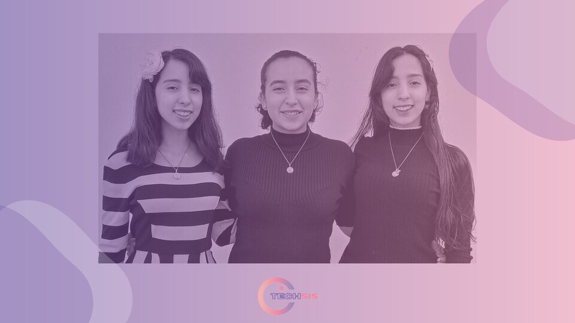

TECH SIS
We are Enys, Angela and Alma, three teenage sisters, seeking to promote learning in the technological field and spread its importance to young people and children.
Our vision
It is that more young people are interested and know about jobs, opportunities that help achieve a brighter future, working on environmental solutions, technology, creation, programming and more.
Women in STEMOur mission
It is to inspire young people between the ages of 12 and 18 to decide what they want to spend their time doing in the technological field, that both women and men can choose, and that they can achieve it by passing any test.
Previous event